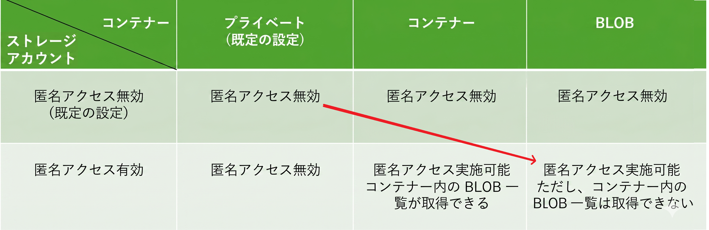
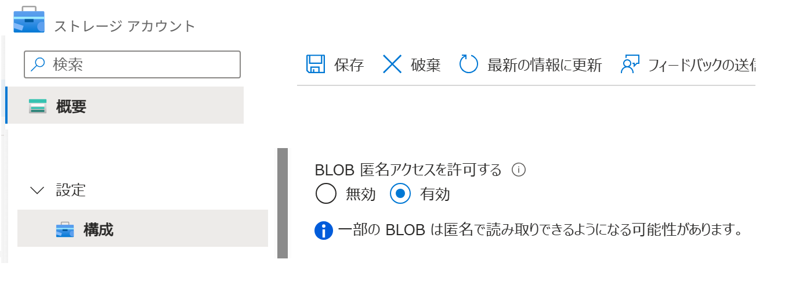
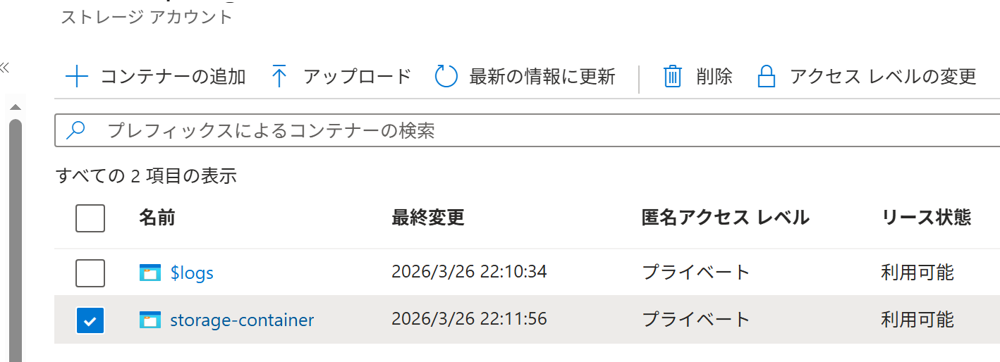
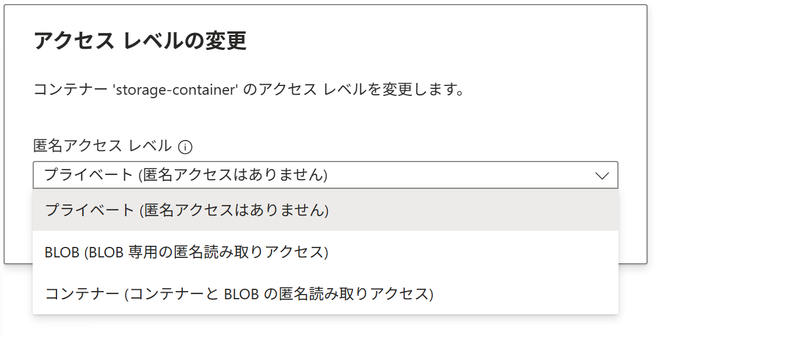
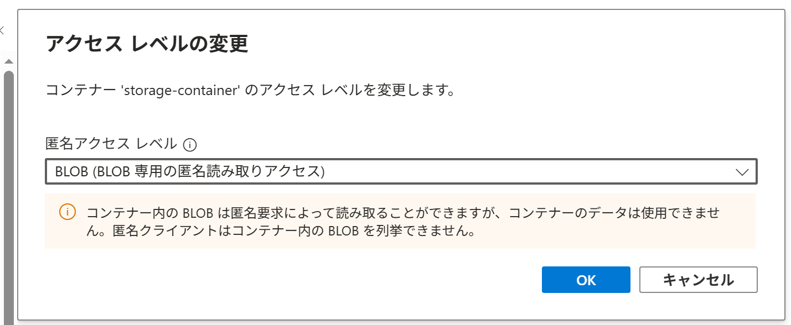
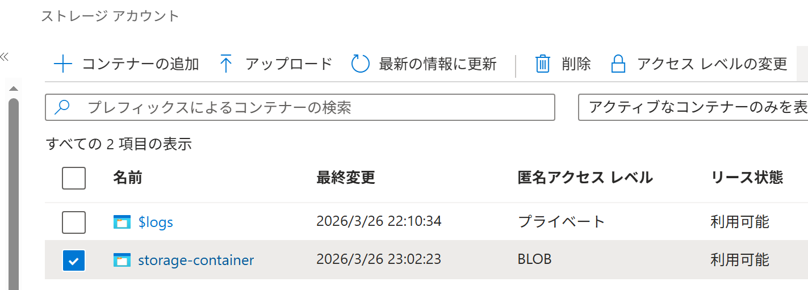
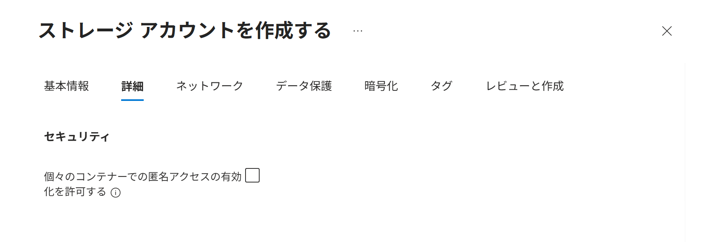
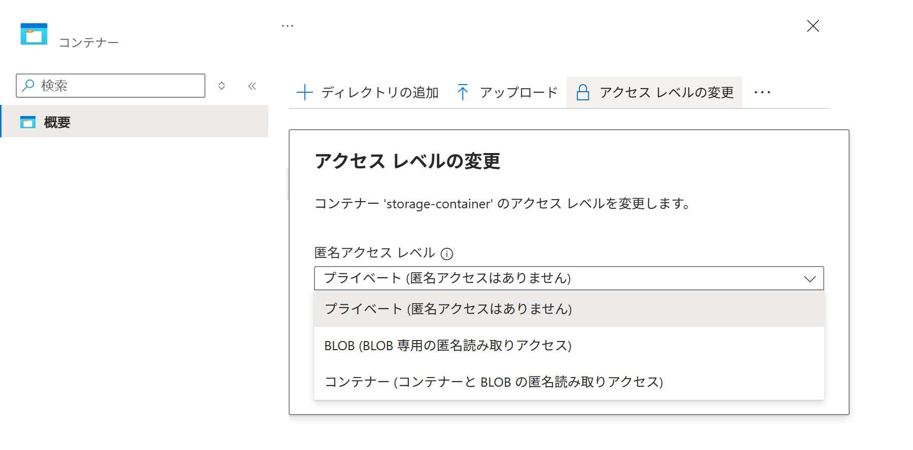

Azure ポータル で BLOB の 匿名アクセス を許可する
適用対象: ✔️ ストレージ アカウント
この演習では、Azure ポータル を使用して BLOB の 匿名アクセス を許可します。
所要時間: 約 15 分
先行の演習
この演習を始める前に BLOB を作成する を完了してください。
匿名アクセス マトリクス表
ストレージアカウントの設定が コンテナーの設定よりも優先されます。
- ストレージアカウントが 匿名アクセスを無効にする場合、すべてのコンテナーは 匿名アクセス無効
- ストレージアカウントが 匿名アクセスを有効にする場合、コンテナーごとに 匿名アクセスレベルを選択可能
ここでは ストレージアカウント と コンテナー を設定して、BLOB に匿名アクセスができるように変更します。

タスク 1: BLOB 匿名アクセスの許可
ストレージ アカウントで BLOB への 匿名アクセスを許可します。
- ポータルメニューから [ストレージ アカウント] を選択します。
storagev2msaz1を選択します。- サービスメニューから 設定 ＞ [構成] を選択します。
- BLOB 匿名アクセスを許可する が [無効] であることを確認します。
- BLOB 匿名アクセスを許可する で [有効] を選択します。

- コマンドバーで [💾 保存] を選択します。
タスク 2: 匿名アクセスレベルの変更
コンテナーで 匿名アクセスレベルを プライベート から BLOB に変更します。
- ポータルメニューから [ストレージ アカウント] を選択します。
storagev2msaz1を選択します。- サービスメニューから データ ストレージ ＞ [コンテナー] を選択します。
- [🔄 最新の情報に更新] を選択します。
storage-containerの 匿名アクセスレベル が プライベート であることを確認します。storage-containerのチェックボックスにチェックを入れます。
- コマンドバーで [🔒 アクセス レベルの変更] を選択します。
- 匿名アクセスレベルで [BLOB (BLOB 専用の匿名読み取りアクセス)] を選択します。


- [OK] を選択します。
タスク 3: 変更されたリソースの確認
BLOB にインターネット経由でアクセスできることを確認します。
- [🔄 最新の情報に更新] を選択します。
storage-containerの 匿名アクセスレベル が BLOB に変更されていることを確認します。
storage-containerを選択します。- 前のタスクで アップロードしたファイル を選択します。
- URLの 右端の [コピー] ボタン を選択します。
- ブラウザで新しいタブを開いてコピーしたURLをアドレスバーに貼り付けます。
- アップロードした画像ファイルが表示されることを確認します。
匿名アクセス / 匿名アクセス レベル
匿名アクセスは、サインインや認証なしで BLOB を読める設定です。
匿名アクセスは ストレージアカウント単位で設定します。

匿名アクセス レベルは BLOB の公開範囲を決めます。
個々の BLOB ごとには設定できず、コンテナー単位で設定します。

| ストレージ アカウント | コンテナー | |
|---|---|---|
| 名称 | 匿名アクセス （BLOB 匿名アクセス） |
匿名アクセス レベル |
| 役割 | 匿名アクセスを許可するかどうか | 匿名アクセスをどこまで許可するか |
| 対象範囲 | アカウント内の すべてのコンテナー （大元の設定） （コンテナーの設定よりも優先される） |
設定した 特定のコンテナーのみ （個別の設定） （ストレージアカウントの設定に従う） |
| 匿名アクセス レベル | プライベート ：非公開 |
|
| コンテナー ：ファイルとファイル一覧を公開 |
||
| BLOB ：ファイルを公開 |